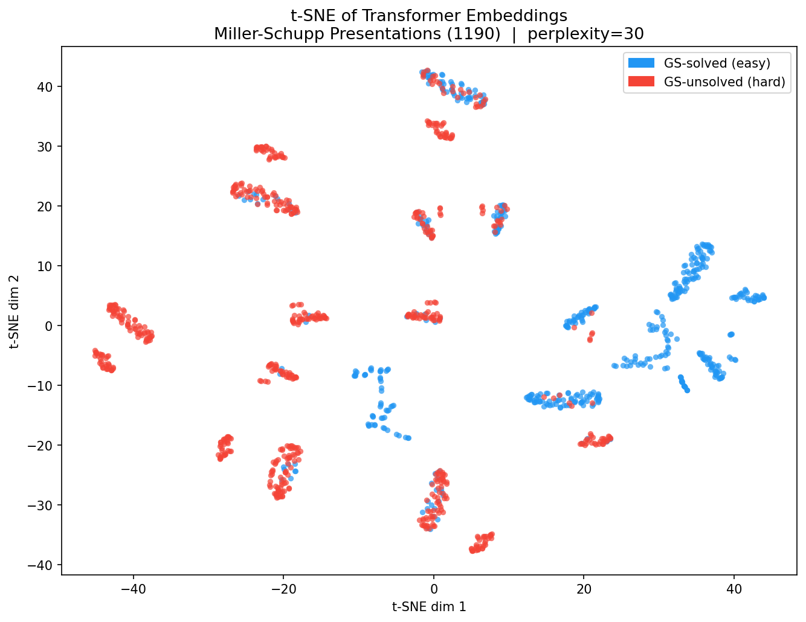
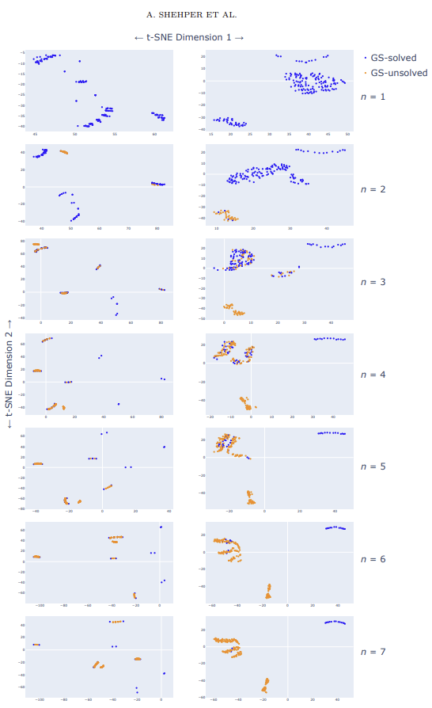
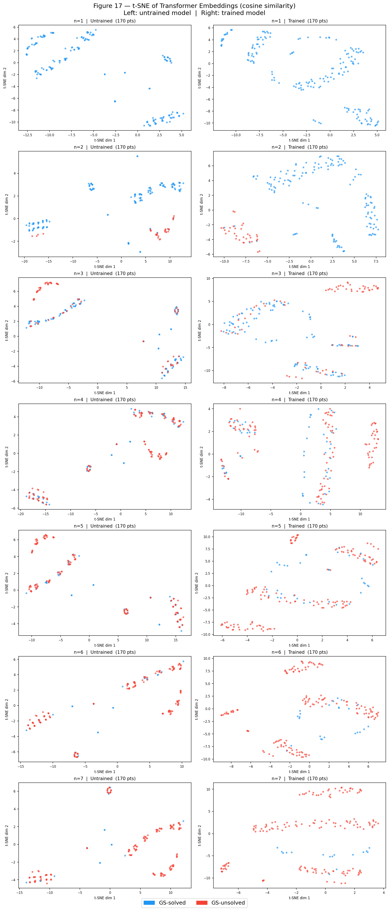

Replicating Transformer Models for AC Trivialization
A technical replication of the dataset, architecture, and embedding space dynamics presented in "What Makes Math Problems Hard for Reinforcement Learning: A Case Study".
Architecture Details
The original paper implemented a sequence modeling approach rather than traditional Deep Q-Learning to solve instances of the Andrews-Curtis problem. My replication utilizes identical parameters to maintain fidelity in the comparative analysis.
By preserving the 8-layer, 512-dimensional continuous representation space, the auto-regressive model was tasked with predicting future tokens given the mathematical presentations context.
Visuals & Results
A core finding of the paper was the structure of the learned embedding space. A successful replication should organize the problem instances similarly. By applying t-SNE dimensionality reduction to the final layer embeddings, we can visually compare structural characteristics.

The comparative layout below illustrates the similarities between the paper's original embedding space (left) and this replicated model's clustering performance (right) segmented by problem length parameter $n$.


Known Limitations
During the reconstruction of the training dataset, I omitted the cyclic substitution step. This deviation resulted in duplicate equivalent presentations remaining present in the training data, which inherently may have impacted density, generalization, and overall organization within the model's embedding space clustering.